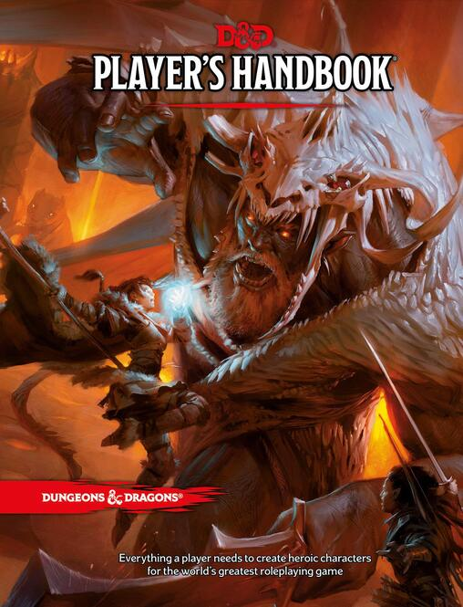

Dungeons and Dragons
Dungeons and Dragons (D&D) fue creado y comercializado por Gary Gygax en 1974, para luego convertirse en uno de los juegos de rol más jugados en el mundo con diversas ediciones hasta la fecha e innumerables incursiones en series de televisión, animación y videojuegos.
El juego no tiene una ambientación definida, pero suele situarse en la fantasía medieval. El sistema de juego está estructurado en una serie de clases de personajes con distintas habilidades y estadísticas, que van definiendo lo que pueden hacer durante la campaña. Cosas como los puntos de vida, de magia, de ataque, de defensa, etc. En conjunto con las habilidades particulares de cada personaje, van definiendo el desarrollo de la aventura y los combates. En conjunto con esto, el narrador tendrá a disposición los distintos tipos de monstruos, todos con sus propias estadísticas y puntos, para que sean los antagonistas de los jugadores en su campaña.
El sistema de combate se desarrolla por turnos en un tablero con casillas definidas, donde el orden de los turnos y cuantas casillas puede moverse el jugador, se define por estadísticas como la velocidad de los personajes y monstruos. En su turno, cada jugador puede elegir entre las habilidades de su personaje, el pasar al ataque, apoyar a un compañero, reagruparse, etc. Todo esto acompañado de una tirada de dados que dependerá de la situación y la habilidad, la que definirá el éxito o el fracaso de la acción a realizar.

Advanced Dungeons and Dragons
AD&D
Advanced Dungueons and Dragons (AD&D) surgio en el año 1977 como otra serie editorial del juego original, que contaba con 3 libros, que eran lo único necesario para empezar a jugar. A diferencia del original, AD&D distingue por separado la clase del personaje (guerrero, mago, clérigo, etc.) y la raza (humano, goblin, elfo, etc.) además de añadir muchas más variantes a las habilidades. Consecuentemente, cuenta con un sistema de reglas robusto, pero a la vez, adaptable. Ya no se limitaba tanto la campaña hacia la tierra media de fantasía, sino que el juego animaba al jugador a crear sus propios mundos. En futuras ediciones, ampliarían la capacidad de personalizar a los personajes del juego y sus habilidades.

Dungeons and Dragons 3.5º Edición
D&D 3.5
La edición 3.5 de D&D salió al público en el año 2003 como una revisión exhaustiva de lo que fue la tercera edición del juego lanzada el año 2000. Los cambios principales fueron la adición de un completo sistema de habilidades y poderes, que era mucho más personalizable por el medio de un sistema de hazañas. Las hazañas son actos que puede realizar el personaje del jugador durante la campaña, que le permiten obtener nuevas habilidades y poderes, además de incursionar en otras clases (por ejemplo, un guerrero aprendiendo habilidades de mago). En los primeros niveles de la campaña el sistema funcionaba bastante bien, pero a medida que avanzaba, los personajes de alto nivel llegaban a tener muchas acciones y movimientos disponibles, por lo que la partida se complejizaba de sobremanera mientras más larga era. La edición 3.5 soluciono esos problemas de balance en conjunto con dar más libertad al jugador. Hasta la fecha es una de las ediciones más jugadas y ha sido la base de muchos juegos D20.

Dungeons and Dragons 5º Edición
D&D 5º
La quinta edición de D&D (también llamada “Next”) se lanzó el año 2014 luego de un largo periodo de pruebas y opiniones de jugadores voluntarios. En esta edición se vuelve a las bases del juego, pero combinándolas con la flexibilidad que aporto la edición 3.5, pero sin tantas opciones. El resultado es un sistema mucho más simplificado en el que los jugadores pueden disfrutar de un estilo de juego más dinámico, donde los personajes suben de nivel rápidamente y el jugador no tiene que esperar tantos eventos como para sentir al personaje como suyo. Sin embargo, el sistema también le ofrece flexibilidad al narrador, de forma que, dependiendo de los gustos de cada uno, la campaña puede sentirse más como la edición original de D&D, o como la edición 3.5. Sin embargo, uno de los cambios más drásticos va en que las tiradas de dados no tienen un carácter tan absoluto de lograr la acción o no, se considera la diferencia de nivel de los jugadores y el contexto en general, de forma que la dificultad de las tiradas se mantiene mas estable.
